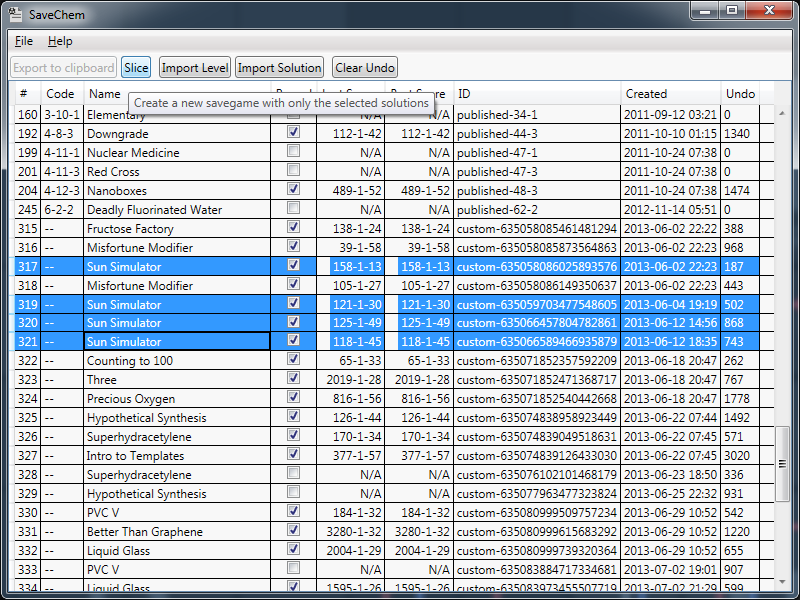
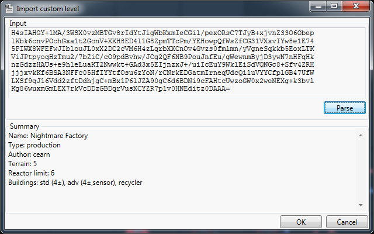
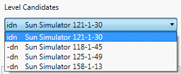
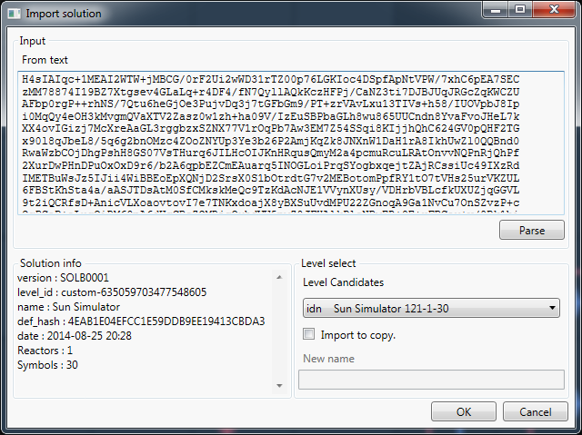

Export (to clipboard)
Export allows you to export the solution for the current level. For the moment,
it's only export-to-clipboard, but it shouldn't be too hard to add export-to-file as well.
(It's just boring to do so)
Select a level and click Export to clipboard to export a solution description to
the clipboard.
Slice
With this, you can create a 'slice' of the levels in the savegame. Effectively, this creates a savegame with only the selected solutions in it. This dramatically reduces the filesize, making it perfect for uploading only a few levels to solutionNet, or just to keep as a small backup.

Slicing. Select multiple levels and hit Slice to create a savegame with just the selected levels.
Import Level
Import a custom level, as you would inside the game. This makes it easier to import a solution
of a mission you don't have yet.
I will say, however, that the validator won't accept everything yet. If you try to import
something that you know is a valid level, but isn't accepted, send it to me and I'll see what
I can do. At present, it doesn't accept sandbox missions yet.

Import level. Enter the level definition at the top and hit Parse.
If that succeeds, you can import the level via OK.
Import Solution
This is the big one. This can import a previously exported solution to your savegame. This
will, of course, delete all traces of the old solution, so be sure you're actually
importing what you want.
The way it works is as follows:
-
Choose your import source. For now it's just text-input, but files will be added in due time.
-
Parse the solution. This will parse the solution input and see if it is a proper
solution. If so it will show some of the solution's statistics and determine level
candidates.
-

Level candidates. A list of levels that this solution could be for. Here, they're
all called 'Sun Simulator', which is why renaming can be useful -_-.
Candidates and level select. The parsing step also tries to find 'candidate' levels that this solution belongs to. It does so according to 3 criteria:
- internal level ID (i)
- level definition (d)
- level name (n)
The solutions are put in the drop-down on the right, sorted by these criteria. It will also display the last score for those levels. For official levels, there should be only one; for custom missions, there may be more. It's possible that no level can be found that matches the solution. In that case, you probably haven't played that level yet.
In any case, select the level that you want to import the solution for.
-
Additional custom options. For custom missions, there are some extra options. You can choose to create a copy of the mission so that the original solution is spared. If you choose to copy, you can also give the level a different name.
-
Click OK!. You're done! You can import! Woo \o/

Import solution. Enter the level definition at the top and hit Parse.
If that succeeds, you'll get a solution summary in the bottom-left, and a candidate list
on the right. Pick the desired candidate, maybe set a new name, and click OK to
import.
Clear undo
The savegames keep an infinite undo history. This means that if you've been playing for a while,
the savegame is mostly undo information, maybe even up to 90%. The Clear Undo allows
you to remove that.
Select one or more levels, then hit Clear Undo to remove the the undo information
for those levels.